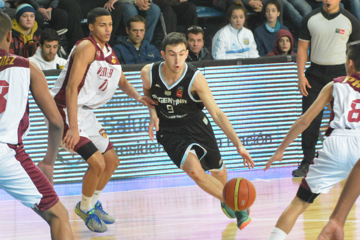
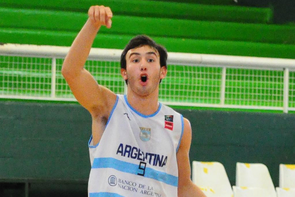

Franco Zandomeni
Inicio
Videos
Entrevistas
Acerca de mi
Contacto
Entrevistas
Franco Zandomeni: "Me encanto la dinamica que tiene el equipo"
Zandomeni: “Fue uno de los mejores grupos que me tocó estar”
 Zandomeni: "Ahora queremos salir campeones"
 Zandomeni: "Tenemos más deseo que los europeos"
Franco Zandomeni al Campus de la NBA
 Franco Zandomeni: "Me encanto la dinamica que tiene el equipo"
Franco Zandomeni: "Me encanto la dinamica que tiene el equipo"
 Zandomeni: “Fue uno de los mejores grupos que me tocó estar”
Zandomeni: “Fue uno de los mejores grupos que me tocó estar”
 Franco Zandomeni al Campus de la NBA
Franco Zandomeni al Campus de la NBA